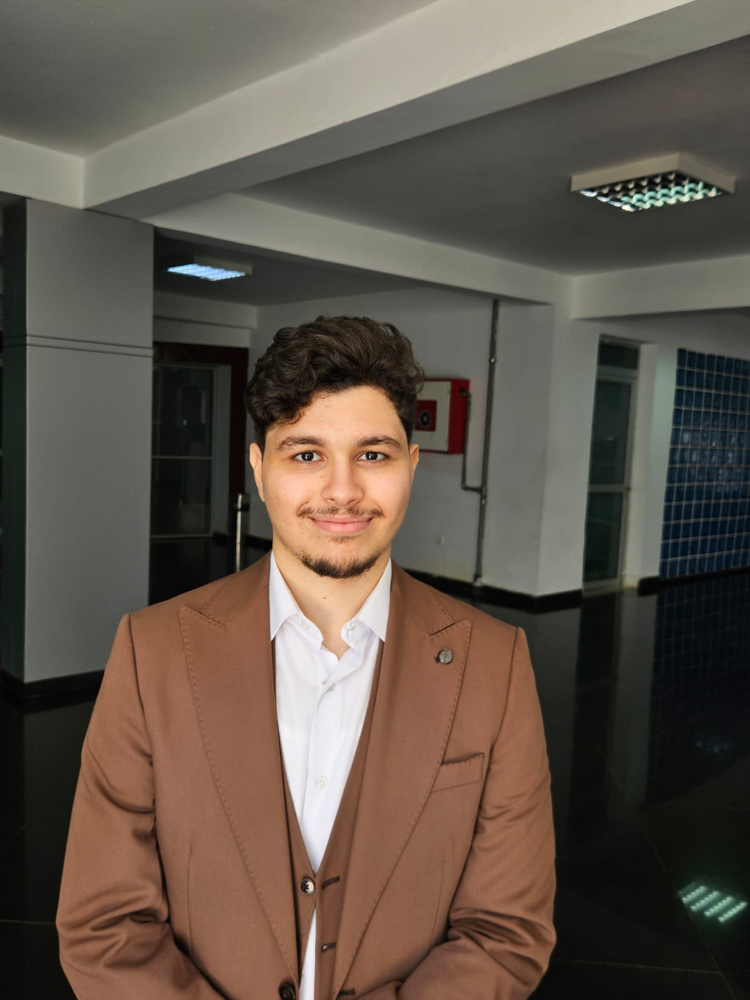

Bonjour, je suis
Ingénieur en données et Machine Learning.
Je conçois des pipelines de données, des systèmes de recherche intelligents
et des jumeaux numériques pour résoudre des problèmes industriels concrets.

A propos
Ingénieur diplômé de l'École des Sciences de l'Information de Rabat, spécialisé dans l'ingénierie des données et le Machine Learning. Mon parcours m'a mené de l'optimisation de bases de données Oracle à la conception de jumeaux numériques pilotés par l'IA.
J'ai une appétence forte pour les projets qui mêlent architecture de données, modélisation prédictive et déploiement en production. Que ce soit un système RAG pour la recherche documentaire ou un moteur de classification des risques d'obsolescence, je cherche toujours l'intersection entre rigueur technique et impact métier.
Actuellement en M2 Robotique à l'Université de Bordeaux, j'élargis mes compétences vers la perception, la commande et les systèmes autonomes.
Parcours
Réalisations
PFE — Yazaki Morocco, Kénitra
Jumeau numérique pour la gestion prédictive des stocks excédentaires et obsolètes. Pipeline ETL + Random Forest + Monte Carlo + dashboard interactif + AI Copilot (Llama 3).
ADII — Administration des Douanes
Solution de recherche augmentée combinant similarité textuelle et visuelle sur le Tarif Douanier. Détection de fraude avec LightGBM (F1 = 0.89). 92% de précision, réponse < 200ms.
ESI — Projet académique
Plateforme de recommandations sportives personnalisées. Clustering K-Means pour la segmentation de profils, matching par similarité cosine, interface Flask avec visualisations Plotly.
ESI — Projet académique
Monitoring de la qualité de l'air en temps réel. API OpenWeatherMap, pipeline PostgreSQL, dashboard Streamlit, alertes intelligentes et prévision ARIMA à 24h (MAPE 12%).
ESI — Projet académique
Classification de 225 espèces par Deep Learning. Transfer Learning sur ResNet50 pré-entraîné ImageNet, data augmentation, précision de 92% sur 30 000+ images.
ESI — Projet académique
Diagnostic de maladies des plantes par vision par ordinateur. CNN multi-classes (38 catégories, 14 espèces), visualisation Grad-CAM, accuracy de 96%.
ESI — Projet académique
Système de recherche documentaire avec Elasticsearch. Analyseurs personnalisés, fuzzy matching, interface JavaFX. Indexation de 50 000+ documents, recherche < 100ms.
Stack technique
Formation
Master 2 en Robotique — Perception, commande, systèmes autonomes, vision par ordinateur embarquée et intelligence artificielle appliquée à la robotique.
en coursData Engineering, Machine Learning, Systèmes d'Information. Big Data, architectures distribuées, NLP, Computer Vision, administration de bases de données, méthodologies Agile.
Formation intensive en Mathématiques, Physique et Informatique. Fondations en analyse, algèbre, mécanique, électromagnétisme, algorithmique et programmation.
Contact
Je suis ouvert aux opportunités en data engineering, machine learning et robotique. N'hésitez pas à me contacter.
h-mattous@hotmail.com